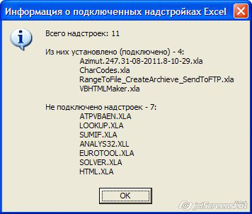

|
Макрос ShowAddinsList выводит список надстроек, подключенных в Microsoft Excel: Sub ShowAddinsList() Dim count As Integer, item As AddIn, msg As String, txt1$, txt2$ For Each item In Application.AddIns If item.Installed Then txt1$ = txt1$ & vbTab & item.Name & vbNewLine count = count + 1 Else txt2$ = txt2$ & vbTab & item.Name & vbNewLine End If Next item msg = "Всего надстроек: " & AddIns.count & vbNewLine & vbNewLine msg = msg & "Из них установлено (подключено) - " & count & ":" & vbNewLine & txt1$ & vbNewLine msg = msg & "Не подключено надстроек - " & AddIns.count - count & ":" & vbNewLine & txt2$
MsgBox msg, vbInformation, "Информация о подключенных надстройках Excel" End Sub Скриншот выводимого сообщения: 
|